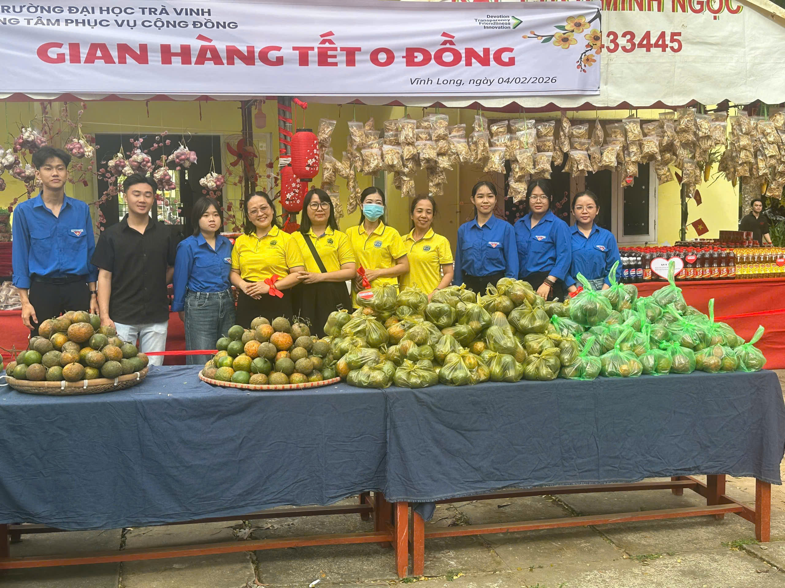

Hoạt động “Gian hàng Tết 0 đồng” là một chương trình ý nghĩa được tổ chức nhân dịp
Tết Nguyên Đán nhằm hỗ trợ những người có hoàn cảnh khó khăn đón một cái Tết đủ đầy và
ấm áp hơn. Trong hình ảnh, có thể thấy gian hàng được tổ chức bởi Trường Đại học Trà Vinh,
với không gian được trang trí rực rỡ sắc xuân. Phía trước là bàn bày nhiều loại nông sản,
trái cây và các phần quà Tết được chuẩn bị chu đáo, phía sau là băng rôn ghi rõ tên chương
trình “Gian hàng Tết 0 đồng”, tạo nên không khí vui tươi, đậm chất ngày xuân.
Các thầy cô và sinh viên mặc áo đồng phục đứng cùng nhau phía sau gian hàng, thể hiện
tinh thần đoàn kết và trách nhiệm vì cộng đồng. Những túi quà được đóng gói cẩn thận, các
loại trái cây được sắp xếp gọn gàng, tất cả đều sẵn sàng trao tặng miễn phí cho người dân
có hoàn cảnh khó khăn. Đây không chỉ là hoạt động hỗ trợ vật chất mà còn mang ý nghĩa tinh
thần sâu sắc, giúp lan tỏa yêu thương và sẻ chia trong dịp năm mới.
“Gian hàng Tết 0 đồng” góp phần tạo nên một mùa xuân nhân ái, nơi mọi người cùng chung
tay vì cộng đồng. Hoạt động này thể hiện truyền thống tương thân tương ái tốt đẹp của dân
tộc Việt Nam, đồng thời giáo dục sinh viên về tinh thần trách nhiệm xã hội. Nhờ những
chương trình như vậy, không khí Tết trở nên ấm áp hơn, gắn kết hơn và tràn đầy ý nghĩa
nhân văn.